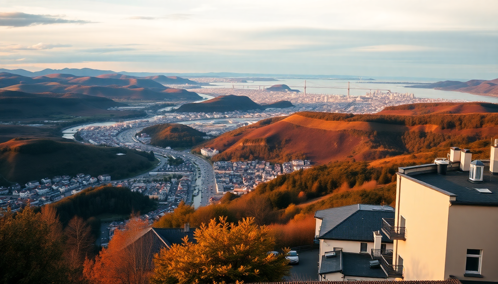

10-Day Norway Itinerary: Oslo, Bergen, Fjords & Tromsø

I just got back from 10 days in Norway, and the biggest surprise was how much ground you can cover without feeling rushed — if you plan the connections right. This itinerary hits four very different places: Oslo’s museums, Bergen’s wooden houses, the Flåm Railway, and Tromsø’s Arctic edge. I’ll tell you which hotels are worth the splurge, which fjord tours actually deliver, and where I’d spend less time next trip.
Is 10 days enough for Norway?
Yes, but only if you fly between the far-apart cities. Driving from Oslo to Tromsø takes two full days, and that’s time you don’t have. I used a mix of trains (Oslo to Bergen via the Bergensbanen), a short ferry (Bergen to Flåm), and two cheap flights (Flåm back to Oslo, then Oslo to Tromsø). You’ll see the highlights without living in transit.
- Bergensbanen railway from Oslo to Bergen — 7 hours, but the scenery over the Hardangervidda plateau is worth every minute.
- Widerøe flights from Bergen to Tromsø via Oslo — book two weeks ahead and you’ll pay around $100 per leg.
- Flåm Railway is a separate ticket, not part of the Bergen line. Reserve it in advance, especially in summer.
What should I do in Oslo for two days?
Oslo felt more low-key than I expected, and I liked that. The waterfront neighborhood Aker Brygge is touristy but has good people-watching. The Vigeland Sculpture Park is free and bizarre in the best way — 200 naked statues in a single park. Skip the Viking Ship Museum (it’s closed for renovation until 2026) and go to the Fram Museum instead. It’s a single ship encased in glass, and the story of polar exploration is genuinely gripping.
- Hotel: We stayed at Thon Hotel Opera — steps from the train station, clean, and breakfast included. Nothing fancy, but the location saved us time.
- Restaurant: Maaemo is the famous one, but at $400 per person I passed. Instead, try Mathallen Oslo food hall for casual cod tacos and reindeer sausage.
- Walk: The roof of the Oslo Opera House — you can walk right up the slanted marble. Free, and the view over the fjord is better than any paid lookout.
How do I get from Oslo to Bergen and what’s worth seeing in Bergen?
Take the morning train from Oslo S to Bergen Station. Sit on the left side for the best mountain views. Once in Bergen, the Fløibanen funicular to the top of Mount Fløyen is a must — but go at sunset to avoid the cruise-ship crowds. The Bryggen wharf is the iconic row of wooden buildings, but it’s mostly souvenir shops now. The real charm is in the alleys behind it.
- Where to eat: Fjellskål on the harbor for the best fish soup I’ve ever had. Bare Vestland for a modern take on cured lamb and lingonberries.
- Hotel: Det Hanseatiske Hotel — a creaky, historic building inside Bryggen. The rooms are small and the floors slope, but you’re literally sleeping in a 1700s trading house.
- Day trip: Take the 20-minute ferry to Alvøen — a tiny village with a restored gunpowder mill and zero tourists. Bring a packed lunch.
Is the Flåm Railway worth the hype?
Yes, but only if you manage expectations. It’s a one-hour train from Myrdal down to Flåm through steep valleys and waterfalls. The train stops at the Kjosfossen waterfall for five minutes — you’ll get sprayed, and a woman in a red dress appears on the rocks (it’s a performance, not a ghost). The scenery is dramatic, but the train is packed, and you’re sharing the carriage with dozens of other people doing the exact same thing.
- Timing tip: Take the 8:25 AM train from Myrdal. The 10:25 AM and later ones are mobbed by cruise-ship day-trippers.
- Flåm itself: Tiny. The Ægir BrewPub has decent beer and a Viking-themed interior that feels more fun than cheesy.
- Where to stay: Flåm Marina & Apartments — basic kitchenettes, but you’re right on the fjord. Book six months ahead for summer.
- Fjord cruise: The Sognefjord cruise from Flåm to Gudvangen is two hours. It’s pretty, but honestly, the train ride is the real highlight. If you’re short on time, skip the cruise and spend the afternoon hiking the Aurland lookout trail instead.
What’s Tromsø like in the summer?
Tromsø in summer is disorienting — the sun never fully sets, and you’ll eat dinner at 10 PM in broad daylight. The city itself is small and walkable. Storgata is the main street with bars and shops, but the real draw is the nature around it. I took a Midnight Sun kayaking tour on the sound — paddling at 11 PM with the sun still orange on the water felt surreal.
- Hotel: Scandic Ishavshotel — rooms with floor-to-ceiling windows facing the Arctic Sea. Expensive, but the breakfast buffet (including reindeer pâté and cloudberries) is the best I had in Norway.
- Activity: The Arctic Cathedral is photogenic from the outside, but skip the interior ($10 entry for a modern church with no artifacts). Instead, take the Fjellheisen cable car to the top of Storsteinen — the view over the city and the islands is unbeatable.
- Restaurant: Fiskekompaniet for king crab and Arctic char. Reserve a week ahead. For cheaper eats, Rå Sushi on Storgata does fresh rolls with local fish.
When is the best time to visit Norway for this itinerary?
June through August gives you the best weather and longest days. I went in late June, and we had 20°C in Oslo and 12°C in Tromsø — manageable with a light jacket. The downside is crowds: Flåm and Bergen are jammed with cruise passengers. If you can handle colder temps, early September is the sweet spot — fewer people, cheaper flights, and the autumn colors in the fjords are stunning.
- June: Midnight sun in Tromsø (starts May 20, ends July 22). Bergen gets rain 200 days a year — pack a waterproof jacket regardless.
- December: Northern lights in Tromsø, but only 4 hours of daylight. Oslo and Bergen are dark and wet. I wouldn’t do this itinerary in winter unless you’re fine with indoor activities.
- Budget tip: Flights to Tromsø are 40% cheaper in September than July. Use that saving for a Hurtigruten ferry day trip from Tromsø to the island of Senja.
FAQ
Is Norway expensive? How much should I budget per day? Yes, it’s expensive. Budget $200–$300 per day per person for mid-range hotels, two meals, and one paid activity. A beer costs $12. Street pizza is $18. The way to save is to cook your own dinner — buy groceries at Rema 1000 or Kiwi (they’re everywhere) and eat lunch as your big meal. Also, tap water is excellent and free everywhere.
Do I need a rental car for this itinerary? No. I didn’t rent a car once. Trains, ferries, and flights cover everything. In Tromsø, the city bus system (Troms Bylekspress) is cheap and runs on time. Driving in Bergen’s narrow one-way streets is a headache, and parking in Oslo costs $50 a day. Save the car for a dedicated road trip to Lofoten, which is a different trip entirely.
Can I see the Northern Lights on this itinerary? Only if you go between October and March. In summer, there’s no darkness, so no lights. If aurora is your priority, swap Tromsø for a winter trip (November to February) and add a night in a cabin in the Lyngen Alps. But be warned: it’s cold (often -15°C), and the lights are never guaranteed. The itinerary above is a summer/fall plan.
Conclusion
- Fly between Oslo and Tromsø; save the train for the scenic Oslo-to-Bergen leg.
- Flåm Railway is a highlight, but the town itself is a one-hour stop — don’t base your whole trip around it.
- In Bergen, eat fish soup at Fjellskål and skip the Bryggen shops; the back alleys are more interesting.
- Tromsø in summer is about the midnight sun kayaking and the cable car — not the Arctic Cathedral.
- Budget $250 per day, cook some meals, and don’t overpack. Layers and a good rain jacket are all you need.